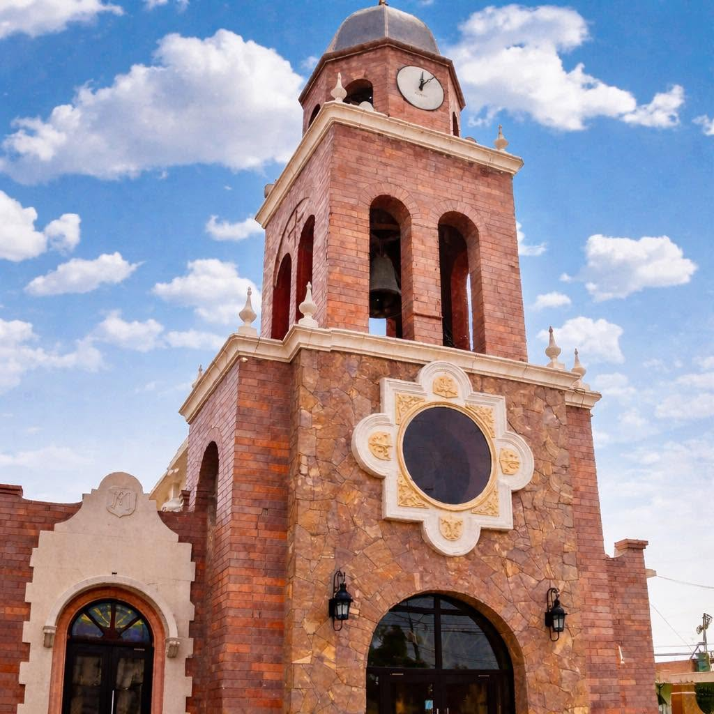

Horarios de Misa
Misas entre semana
Misas Dominicales
Confesiones
Miércoles, Jueves y Viernes
11:00 a.m. - 12:00 p.m.
3:30 p.m. - 4:30 p.m.
Adoración Eucarística
Jueves
8:00 a.m. - 8:00 p.m.
Clero de la Parroquia
Párroco
Pbro. José Carmen Flores Torres
Vicario Parroquial
Pbro. Ramiro Escareño
Diácono
Diác. Martín Gerardo Rodríguez
Información
Horario de Oficina:
Lunes a Viernes
9:00 a.m. - 1:00 p.m.
4:00 p.m. - 7:00 p.m.
Sábado
9:00 a.m. - 1:00 p.m.
Teléfono:
(868) 817-2866,
(868) 817-6118
Dirección:
Solernau y Calle Cuatro, Euzkadi, 87370
Correo:
gpemat@prodigy.net.mx
Facebook:
Parroquia Nuestra Señora de Guadalupe Oficial Matamoros
